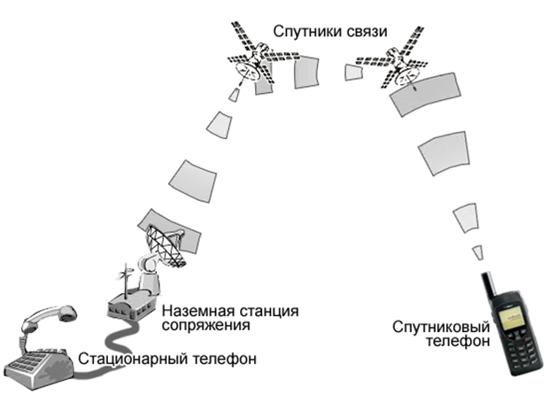

Назначение и основные характеристики систем передачи данных. Спутниковые системы связи.
Назначение и основные характеристики систем передачи данных.
Радиосвязь по каналам передачи данных (телекодовая радиосвязь) применяется в автоматизированных системах управления для передачи данных, являющихся объектом обработки и использования в информационных человеко-машинных системах. Системами передачи данных (СПД) осуществляется передача информации справочного характера, относящейся к УВД, метеорологических, технических и коммерческих данных с борта и на борт ВС и др. Использование СПД позволяет сократить объем речевой информации, циркулирующей в каналах воздушной связи, высвобождая рабочее время диспетчера для операций по УВД. Важнейшей функцией, выполняемой СПД, является автоматическая передача с борта ВС на Землю информации о параметрах движения ВС и качестве функционирования бортовых систем.
Для этого на борту осуществляется автоматический ввод информации с выхода бортовой системы регистрации параметров на вход радиостанции, работающей в канале ПД. Данные об отклонениях от нормативных значений параметров движения и бортовых систем автоматически передаются на Землю и транслируются в АТБ порта посадки, что сокращает время технического обслуживания ВС. Информация передается в планово-диспетчерские службы, что позволяет рационально использовать парк воздушных судов. Большинство типов бортовых радиостанций предназначены для радиотелефонной связи и передачи данных. Важной особенностью СПД являются повышенные требования к достоверности, надежности и времени передачи сообщений по каналу ПД, что обусловлено большой важностью передаваемой информации и трудностью логического контроля ее в процессе передачи и приема. Системы ПД по используемым в них методам повышения достоверности делятся на две группы: системы без обратной связи и с обратной связью.
В системах без обратной связи информация передается по симплексным каналам связи, характеристики которых известны только по априорным сведениям, как правило, ориентировочным. Поэтому методы повышения достоверности оказываются достаточно сложными и включают повторную передачу и передачу по параллельным каналам. Для СПД с обратной связью необходимы дуплексные или полудуплексные каналы связи. Однако за счет обратной связи удается существенно повысить достоверность ПД. Наиболее распространенным путем повышения достоверности является применение в прямом канале кода, исправляющего ошибки. Сведения об обнаруженных ошибках передаются на источник сообщения, которым организуется их повторная передача. В результате отпадает необходимость использовать сложные коды и устраняются потери информации, которые могут возникать в СПД без обратной связи.
Основными характеристиками СПД являются достоверность, скорость передачи и время задержки сообщений. Под достоверностью понимают степень соответствия принятых сообщений переданным. Ошибки в принятой информации, как правило, обусловлены каналами связи. Для характеристики СПД используются следующие виды скорости передачи:
– скорость передачи битов данных
– скорость передачи символов данных, выраженная числом битов данных, переданных в единицу времени (бит/c);
– скорость передачи слов (знаков) данных – число слов данных, переданных в единицу времени;
– скорость передачи единичных элементов цифрового сигнала данных – число единичных элементов цифрового сигнала данных, переданных в единицу времени (1/c).
В общем случае, чем выше достоверность, тем меньше скорость ПД и наоборот. В системах ПД обеспечивается максимальная скорость передачи при заданной достоверности.
В авиации широко используется система автоматического обмена данными "Цифра". Функциональная схема наземного комплекса системы автоматического обмена данными между ВС и Землей приведена на рисунке.
В состав системы входят: управляющий вычислительный комплекс (УВК); устройство сопряжения с каналами связи (УСКС); аппаратура коммутации и дистанционного управления (АКДУ); терминальные устройства (ТУ); каналообразующая аппаратура (КА) для сопряжения УВК с тремя удаленными терминалами в службах авиапредприятия – радиостанциями МВ и ДКМВ и с помощью каналов тональной частоты (ТЧ) и телеграфа (ТГ) – с Главным центром автоматической коммутации сообщений (ЦАКС) единой системы связи авиации (ЕСС А).
Скорость передачи данных по каналам ТЧ равна 2400 бит/с, по телеграфным каналам – 50, 100 или 250 бод. Для передачи используется семиэлементный код МТК-5. Передача данных по каналам МВ осуществляется со скоростью 2400 бит/с, по каналам ДКМВ – 75 и 150 бит/с.
В каналах МВ реализуется частотная манипуляция с индексом манипуляции m = 0,5. В каналах ДКМВ используется
частотно-временная манипуляция. В наземных каналах связи реализована относительная фазовая манипуляция.
Спутниковые системы связи.
Спутниковая связь – это связь, осуществляемая с помощью искусственных спутников Земли, обращающихся на разных высотах по своим орбитам. Ещё недавно о дальней наземной радиосвязи можно было только мечтать, но успехи в освоении космоса показали, что с установкой на искусственные спутники ретрансляторов эта проблема вполне решаема, не говоря уж о создании систем связи, охватывающих всю планету. В результате все современные спутники связи оборудованы электронной аппаратурой для приема, обработки, усиления и ретрансляции сигнала, что обеспечивает надёжную связь как между самими спутниками, так и с наземными станциями сопряжения, основное предназначение которых – принимать и маршрутизировать сигнал спутника до вызываемого абонента.

В зависимости от предстоящих задач, которые должен выполнить конкретный спутник, а также от технических возможностей самой орбиты, выбирается та или иная направленность и высота орбиты. Если для наблюдения за звёздами требуется спутник, находящийся за пределами верхних слоев земной атмосферы, то для наблюдений за облаками и земным ландшафтом нужна орбита, близкая к Земле. Однако очень малая высота орбиты отражается на долговечности спутника из-за разрушающего действия плотных слоёв атмосферы. Также жёсткие требования к высоте орбиты задают околоземные зоны радиации, ведь для защиты от них требуются тяжёлые защитные экраны, а это дополнительный вес. По направленности к Земле спутники бывают экваториальные, полярные и наклонные. Чтобы вывести спутник на орбиту с минимальными издержками, достаточно, чтобы орбита находилась невысоко в плоскости экватора, а запуск осуществлялся с запада на восток (по направлению вращения Земли). Однако экваториальные орбиты не очень пригодны для научных исследований, но зато они комфортны для спутников-ретрансляторов с периодом обращения, равным земному.
Экваториальные орбиты также непригодны для геофизических наблюдений, так как в поле видимости оказывается лишь полоса вдоль экватора. Разновидностью экваториальной орбиты является геостационарная орбита. Её особенностью является то, что на такой высокой орбите спутник всегда находится в зоне видения для приёма и обработки сигнала. Несмотря на весьма затратный вывод спутника на эту орбиту, она сегодня очень «заселена». На этой орбите сегодня работают, в том числе, спутники системы Инмарсат, VSAT, Турайя.
Существуют ещё полярные орбиты, которые проходят над Северным и Южным полюсами Земли, располагаясь перпендикулярно экватору. Один спутник с такой орбиты способен периодически обозревать любой участок Земли. Если же использовать несколько таких орбит под углом друг другу с участием нескольких десятков спутников, то вся Земля окажется как на ладони. На таких орбитах спутники выполняют работы по дистанционному зондированию Земли для получения данных о планете и припланетном атмосферном слое, о природных ресурсах Земли, о динамике природных процессов и так далее. Именно на таких орбитах работает система спутниковой телефонии Иридиум.
Все прочие орбиты называются наклонными (эллиптические). Так как спутник перемещается относительно наземного наблюдателя, запускать необходимо минимум три спутника на одну орбиту, только так можно обеспечить круглосуточный доступ к связи. В этих случаях наземные станции, соответственно, оборудуются системами слежения за спутниками. На наклонных орбитах работают, например, спутники системы Глобалстар, угол их наклонения составляет 52 градуса, поэтому спутники видят Землю хорошо, но без полюсов. Предельным случаем наклонной орбиты (угол наклонения 90 градусов) является полярная орбита, спутники на этих орбитах видят всю Землю, включая Северный и Южный полюса. Чем выше орбита от земной поверхности, тем меньше спутников требуется для её обозрения. И наоборот, чем ниже орбита, тем больше спутников нужно запустить в космос, чтобы обеспечить бесперебойную связь.
По высоте нахождения орбит от земной поверхности спутники бывают:
1) геостационарные (располагаются в районе экватора на высоте 35786 км, для покрытия всей земной поверхности достаточно три спутника; используются в системах Инмарсат, VSAT, Турайя);
2) средневысотные (находятся в диапазоне 5000-20000 километров, для покрытия всей земной поверхности требуется 10 спутников; используются в системах глобального позиционирования GPS и ГЛОНАСС);
3) низкоорбитальные (диапазон нахождения 450-800 км, для покрытия связью всей Земли нужно не менее пятидесяти спутников; используются в системах Иридиум и Глобалстар).
Геостационарные спутники ещё называются неподвижными, а средневысотные и низкоорбитальные, наоборот, подвижными.
Система неподвижных (геостационарных) спутников
Сам по себе геостационарный спутник представляет собой спутник, высоко висящий над Землёй в районе экватора (35’786 км над уровнем моря, 0° широты), что позволяет ему обеспечивать непрерывность передачи данных за счёт периода обращения, равного периоду вращения Земли. Это говорит о том, что спутники вращаются с той же скоростью, что и Земля, и для наблюдателя с Земли спутники кажутся неподвижными. Это очень напоминает два автомобиля, движущихся по трассе с одинаковой скоростью; глядя друг на друга, водители могут сказать, что их автомобили стоят на месте. То же самое и со спутником, выведенным на геостационарную орбиту, нам отсюда он кажется неподвижно зависшим над одной и той же точкой планеты Земля, эта точка так и называется – точка стояния. А это значит, что антенна, однажды закреплённая на Земле и направленная в небо, сохраняет с данным спутником постоянную непрерывную связь.
Такого рода связь не имеет «сюрпризов» в обслуживании, а система из нескольких спутников обеспечивает охват чуть ли не всей территории Земли. В силу популярности геостационарной орбиты её также называют «геостационарная магистраль» из-за массового «наплыва» на данную орбиту космических аппаратов (их около полутысячи), как метеорологических, навигационных, так и военно-разведывательных. Геостационарную орбиту ещё называют «орбитой Кларка» - в честь известного фантаста Артура Кларка, кто первым рассчитал эту орбиту и высказал идею о глобальной системе связи. В идеале геостационарная орбита должна быть круговой и иметь нулевое наклонение. Орбиты с ненулевым наклонением характеризуются смещениями по широте (дрейф назад и вперёд, восточно-западная либрация), так как спутник движется то быстрее, то медленнее в различных точках своей орбиты. Чтобы спутники оставались на геостационарной орбите, они снабжены определённым запасом топлива для произведения соответствующих коррекций на протяжении всего срока службы на орбите. Чего же не хватает для нормальной работы на геостационарной орбите?
Дело в том, что если спутник расположен над экватором, то и охватывать он будет лишь определённую область экватора, а те зоны, что находятся севернее и южнее экватора, такой спутник охватить не может. Например, три геостационарных спутника системы Инмарсат охватывают большими «солнечными зайчиками» большую часть территории нашей планеты, однако полюса они не охватывают вообще. Более того, если между телефоном и спутником оказалась сопка, связи точно не будет. Связь через геостационарные спутники также характеризуется чувствительными задержками в распространении сигнала (2-4 секунды на маршруте Земля-спутник-Земля), а также дороговизной обслуживания самих спутников. Несмотря на это, геостационарные спутники продолжают оставаться незаменимыми как для военно-разведовательных, так и для научно-космических целей.
Система подвижных (средне и низкоорбитальных) спутников
Подвижные спутники характеризуются своим перемещением относительно наземного наблюдателя. По характеру работы они напоминают курьеров, которые в одном месте принимают и запоминают информацию, а в другом – передают по команде с Земли. Спутники, находящиеся на средневысоких и особенно низких круговых орбитах, обеспечивают значительно большие потоки передаваемых наземной станции сигналов. С одной стороны, это очень хорошо. Но это и тяжело, крайне тяжело в техническом исполнении. С уменьшением высоты орбиты спутники перестают друг друга видеть, поэтому требуется не только большое число спутников, но и разветвленная сеть наземных коммутаторов для развёртывания системы радиолиний с задержанной, к тому же, ретрансляцией. Подвижные спутники используются как в военных, так и навигационных (GPS, ГЛОНАСС) и метеорологических целях. Они также обеспечивают связью спутниковые мобильные телефоны; сейчас таких операторов два, это Иридиум и Глобалстар. Обе системы имеют очень сложную предысторию.